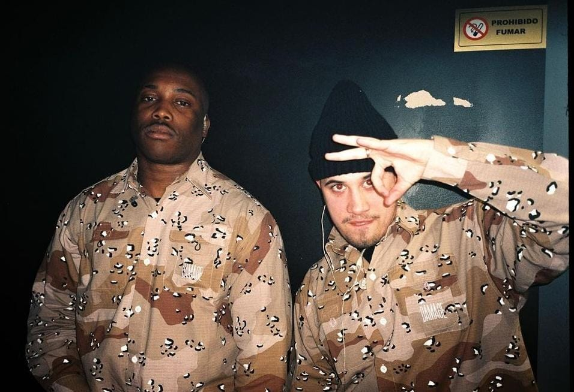
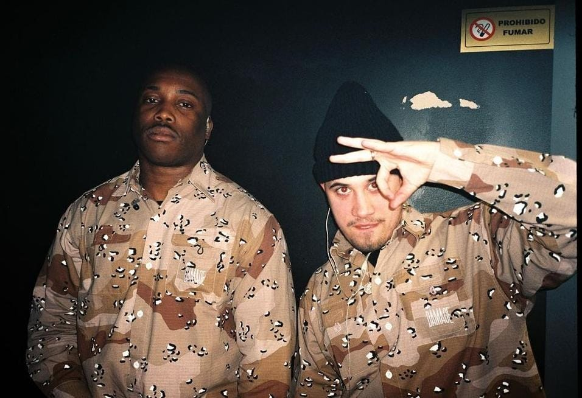

Biografía
Tomás Canivell Pedrosa nació el 29 de octubre de 2007 en Burgos, España. Desde joven mostró gran talento para los deportes.
Ha realizado varios deportes alo largo de su vida.
Fútbol
El fútbol ha sido el deporte mas importante que ha realizado
| Año | Club | Partidos | Goles |
|---|---|---|---|
| 2014-2020 | CD Antolín | 292 | 118 |
| 2020-2021 | Burgos CF | 438 | 450 |
| 2021-2024 | CD Antolín | 89 | 81 |
Logros
- 2 veces ganador de liga provincial de Burgos
- 2 veces ganador de liga regional de Castilla y León
- Campeón de una Gothia Cup
- Maximo goleador de la liga de infantiles provincial de burgos (2018-2019)
Galería
 
